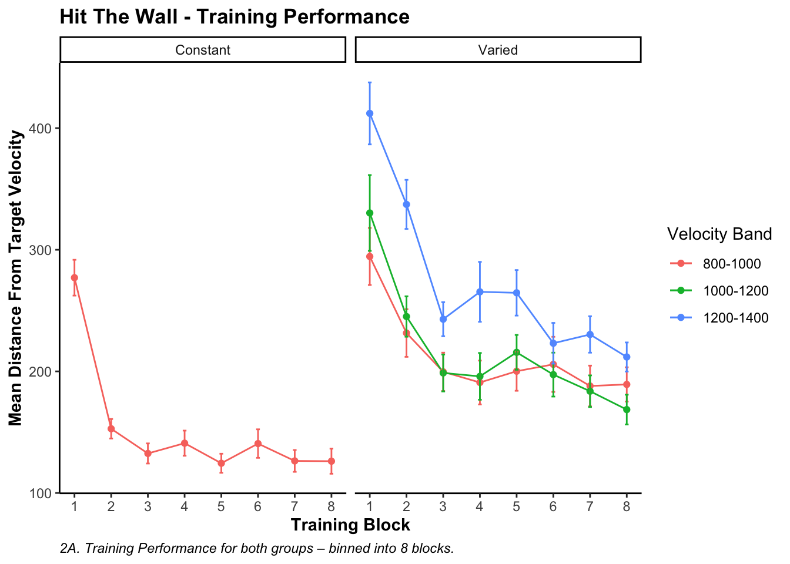

HTW
Project 2
In project 1, we applied model-based techniques to quantify and control for the similarity between training and testing experience, which in turn enabled us to account for the difference between varied and constant training via an extended version of a similarity based generalization model. In project 2, we will go a step further, implementing a full process model capable of both 1) producing novel responses and 2) modeling behavior in both the learning and testing stages of the experiment. For this purpose, we will apply the associative learning model (ALM) and the EXAM model of function learning [@deloshExtrapolationSineQua1997]. ALM is a simple connectionist learning model which closely resembles Kruschke’s ALCOVE model [@kruschkeALCOVEExemplarbasedConnectionist1992], with modifications to allow for the generation of continuous responses.
Introduction
Whether faced with the problem of how hard to press down on the gas pedal to achieve the desired speed in a new car, or of adjusting the volume of a laptop to be audible within a desired distance, the tasks that humans must perform will frequently require learning and exploiting the relationship, or function, between continuous dimensions of the environment. Such phenomena, often referred to as function learning [@brehmerHypothesesRelationsScaled1974; @carrollFunctionalLearningLearning1963]
Central questions of the function learning literature include the capacity of learners to generalizing what they have learned to novel instances that fall in-between or outside the range prior experience, the relative difficulties of learning various functional forms (e.g. linear vs. quadratic), and the relative effectiveness of rule-based vs. association-based exemplar models [@bottNonmonotonicExtrapolationFunction2004; @deloshExtrapolationSineQua1997; @jonesActiveFunctionLearning2018; @kalishPopulationLinearExperts2004; @mcdanielConceptualBasisFunction2005; @mcdanielPredictingTransferPerformance2009].
The research questions of Project 2 here brings us into close alignment with the well established literature on function learning [@brehmerHypothesesRelationsScaled1974; @carrollFunctionalLearningLearning1963; @kohInductionCombinationRules1993].
Methods
Participants
Data was collected from 647 participants (after exclusions). The results shown below consider data from subjects in our initial experiment, which consisted of 196 participants (106 constant, 90 varied). The follow-up experiments entailed minor manipulations: 1) reversing the velocity bands that were trained on vs. novel during testing; 2) providing ordinal rather than numerical feedback during training (e.g. correct, too low, too high). The data from these subsequent experiments are largely consistently with our initial results shown below.
Task
We developed a novel visuomotor extrapolation task, termed the “Hit The Wall” (HTW) task, wherein participants learned to launch a projectile such that it hit a rectangle at the far end of the screen with an appropriate amount of force. Although the projectile had both x and y velocity components, only the x-dimension was relevant for the task.
Design:
90 training trials split evenly divided between velocity bands. Varied training with 3 velocity bands and Constant training with 1 band.
No-feedback testing from 3 novel extrapolation bands. 15 trials each.
No-feedbacd testing from the 3 bands used during the training phase (2 of which were novel for the constant group). 9 trials each.
Feedback testing for each of the 3 extrapolation bands. 10 trials each.
Results
Training:
Training performance is shown in Results Figure 2A. All groups show improvement from each of their training velocity-bands (i.e. decreasing average distance from target). In the velocity band trained at by both groups (800-1000), the constant group maintains a superior level of performance from the early through the final stages of training. This difference is unsurprising given that the constant group had 3x more practice trials from that band.

Testing:
Results Figure 2C shows the average velocity produced for all 6 bands that were tested. At least at the aggregate level, both conditions were able to differentiate all 6 bands in the correct order, despite only having received training feedback for 1/6 (constant) or 3/6 (varied) bands during training. Participants in both groups also had a bias towards greatly overestimating the correct velocity for band 100-300, for which both groups had an average of greater than 500.

For evaluating testing performance, we consider 3 separate metrics. 1) The average absolute deviation from the correct velocity, 2) The % of throws in which the wall was hit with the correct velocity and 3) The average x velocity produced.
As is reflected in Results Figure 2B, the constant group performed significantly better than the varied group at the 3 testing bands of greatest interest. Both groups tended to perform worse for testing bands further away from their training conditions. The varied group had a slight advantage for bands 1000-1200 and 1200-1400, which were repeats from training for the varied participants, but novel for the constant participants.

Modeling
In project 1, we applied model-based techniques to quantify and control for the similarity between training and testing experience, which in turn enabled us to account for the difference between varied and constant training via an extended version of a similarity based generalization model. In project 2, we will go a step further, implementing a full process model capable of both 1) producing novel responses and 2) modeling behavior in both the learning and testing stages of the experiment. For this purpose, we will apply the associative learning model (ALM) and the EXAM model of function learning (DeLosh 1997). ALM is a simple connectionist learning model which closely resembles Kruschke’s ALCOVE model (Kruscke 1992), with modifications to allow for the generation of continuous responses.
ALM & Exam Description
Delosh et al. (1997) introduced the associative learning model (ALM), a connectionist model within the popular class of radial-basis networks. ALM was inspired by, and closely resembles Kruschke’s influential ALCOVE model of categorization (Kruscke 1992). ALM is structured with input and output nodes that correspond to regions of the stimulus space, and response space, respectively. The units in the input layer activate as a function of their similarity to a presented stimulus. As was the case with the exemplar-based models, similarity in ALM is exponentially decaying function of distance. So, for example, an input stimulus of value 55 would induce maximal activation of the input unit tuned to 55. Depending on the value of the generalization parameter, the nearby units (e.g. 54 and 56; 53 and 57) may also activate to some degree. The input layer is fully connected to the output layer, and the activation for any particular output node is simply the weighted sum of the connection weights between that node and the input activations. The network then produces a response by taking the weighted average of the output units (recall that each output unit has a value corresponding to a particular response). During training, the network receives feedback which activates each output unit as a function of its distance from the ideal level of activation necessary to produce the correct response. The connection weights between input and output units are then updated via the standard delta learning rule, where the magnitude of weight changes are controlled by a learning rate parameter.
See Table 2A for a full specification of the equations that define ALM and EXAM.
Model Equations
| Equation | Description | |
|---|---|---|
| ALM Activation & Response | ||
| Input Activation | \(a_i\)(X) = \(\frac{e^{-c \cdot (X-X_i)^2}}{ \sum_{k=1}^Me^{-c \cdot (X-X_i)^2}}\) | Activation of each input node, \(X_i\), is a function of the Gaussian similarity between the node value and stimulus X. |
| Output Activation | \(O_j\)(X) = \(\sum_{k=1}^Mw_{ji} \cdot a_i(X)\) | Activation of each Output unit \(O_j\) is the weighted sum of the input activations and association weights |
| Output Probability | \(P[Y_j | X] = \frac{O_i(X)}{\sum_{k=1}^Mo_k(X)}\) | Each output node has associated response, \(Y_j\). The probability of response \(Y_j\) is determined by the ratio of output activations |
| Mean Output | \(m(x) = \sum_{j=1}^LY_j \cdot \bigg[\frac{O_j(X)}{\sum_{k=1}^Lo_k(X)}\bigg]\) | The response to stimulus x is the weighted average of the response probabilities |
| ALM Learning | ||
| Feedback Activation | \(f_j(Z)=e^{-c\cdot(Z-Y_j)^2}\) | After responding, feedback signal Z is presented, activating each output node via the Gaussian similarity to the ideal response |
| Update Weights | \(w_{ji}(t+1)=w_{ji}(t)+\alpha \cdot {f_i(Z(t))-O_j(X(t))} \cdot a_i(X(t))\) | Delta rule to update weights. Magnitude of weight changes controlled by learning rate parameter alpha. |
| EXAM | ||
| Extrapolation | \(P[X_i|X] = \frac{a_i(X)}{\sum_{k=1}^Ma_k(X)}\) | Novel test stimulus X activates input nodes associated with trained stimuli |
| \(E[Y|X_i]=m(X_i) + \bigg[\frac{m(X_{i+1})-m(X_{i-1})}{X_{i+1} - X_{i-1}} \bigg] \cdot[X-X_i]\) | Slope value computed from nearest training instances and then added to the response associated with the nearest training instance,m(x) | |
Model Fitting
Following the procedure used by McDaniel & Busemeyer (2009), we will assess the ability of both ALM and EXAM to account for the empirical data when fitting the models to 1) only the training data, and 2) both training and testing data. Models will be fit directly to the trial by trial data of each individual participants, both by minimizing the root-mean squared deviation (RMSE), and by maximizing log likelihood.
Finding the sensitivity and learning rate parameters most likely to have generated the training data from a given participant. Each set of parameter values results in a learning trajectory that produces a weight matrix.